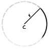
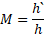

1.Light – Reflection and Refraction
Introduction:
We see things when light enters our eyes.
There are 2 types of things: objects which emit their own light; And objects which reflect the which falls on them. So, when light regularly reflects from an object, it produces an image. And if it is irregular, it doesn't form an image.

Light travels in straight lines. This is why objects cast a shadow.
1. Reflection of Light
The process of bounce-back of light rays that fall on the surface of an object is called Reflection.
We can think of this as a ball falling on a wall and bounce-back.
Some definitions:
Point of Incidence: The point at which the Incident ray hits the mirror.
Normal: perpendicular to the surface of a mirror at the point of incidence.
The angle of Incidence/reflection: The angle between the normal and the Incident/reflected ray.
Virtual Image: Images that can’t be produced on a screen.
Real Images: Images that can be produced on a screen.
Erect: Upright
Magnified: Enlarged
Diminished: Decrease in size
Laws of reflection:
i. The angle of incidence is equal to the angle of reflection.
ii. The incident ray, the reflected ray, and the normal lie on the same plane. (coplanar)
Note: Laws of Reflection are applicable everywhere even if the surface is curved or irregular.
Spherical mirrors:
These types of mirrors are part of a sphere.
There are two types of Spherical
mirrors:
(a) Concave mirrors: These mirrors have the reflective side bulged inside (cave side).
(b) Concave mirrors: These mirrors have the reflective side bulged outside (vex side).
Some definitions:
Centre of curvature: The centre of the sphere of which the mirror is a part.
The radius of curvature: The radius of the sphere of which the mirror is a part.

Pole: The centre of the mirror is called the pole.
The principal axis: A straight line passing through the centre of curvature and the pole.
Some Questions
Define the principal focus of a concave mirror.
Pole’s definition
Principal Focus and Focal length:
(a)
Concave mirrors:
Principal Focus: The point on the principal axis where light rays parallel to the principal axis meet after reflection is called the Principal Focus(F).
Focal Length: The distance between the Pole and the Principal focus is called the focal length.
Note: Principal Focus is in front of the mirror. (real)
(b)
Convex mirrors:
Principal Focus: The point on the principal axis from where light rays parallel to the principal axis appear to diverge after reflection is called the Principal Focus(F).
Focal Length: The distance between the Pole and the Principal focus is called the focal length.
Note: Principal Focus is behind the mirror. (virtual)
Relation between the radius of Curvature and Focal Length of a Spherical Mirror:
The Radius of curvature is twice the Focal length
Some Questions
Find the focal length of a convex mirror whose radius of curvature is 32 cm.
The radius of curvature of a spherical mirror is 20 cm. What is its focal length?

Some ray diagrams tips (everything is reversible):
(i) Rays parallel to the principal axis will always converge/diverge from/to the principal focus.
(ii) Rays passing through/towards the centre of curvature will reflect backward.
Some cases of object and image formation (no need to memorize you can derive using Ray diagrams):
Concave mirror
Convex mirror
Uses of Spherical Mirror:
(a) Concave mirrors:
· It is used by dentists to look at teeth (magnifies stuff).
· Used in torch lights to direct light in a single direction.
· Used in antennas to direct radio waves to focus.
(b) Convex mirrors:
· It is used in the rear side view of a car because it can give us a wider image. (Similar stuff)
Sign convection (New Cartesian Sign Convention):
The incident direction is always positive and the upward direction is always positive.
Mirror Formula:
 The Mirror Formula is.
The Mirror Formula is.
Where v = Image distance, and u = Object distance.
Magnification Formula:
The Magnification is

Magnification formula is
Some Questions
An object of size 7.0 cm is placed at 27 cm in front of a concave mirror of focal length 18 cm. At what distance from the mirror should a screen be placed so that a sharply focussed image can be obtained? Find the size and the nature of the image.
, , ,

the Image should be placed -54cm away.
2. Refraction of Light
The change in direction of light when it passes from one medium to another (due to difference in speed) is called Refraction.
To understand why It works let's assume that light is a car.
Travelling at the speed of light.
When the first enters the second medium It slows down and makes the car rotate. It is exactly what happens with Light.
Laws of refraction:
i. The Incident ray, Refracted, and normal all lie in the same plane.
ii. The ratio sine of to is a constant. This law is also known as Snell’s law.
Refractive Index:
Refractive Index(n) is a measure of how slow an object travels in a given medium.
This is the refractive index of 2 with respect to 1.
The above equation uses Absolute refractive indices of and .
The absolute refractive index of 2 is just  , where c
is the speed of light in vacuum ().
, where c
is the speed of light in vacuum ().
Some Questions
You are given kerosene, turpentine, and water. In which of these does the light travel fastest? Use the information given in Table 10.3.
Light enters from air to glass having a refractive index of 1.50. What is the speed of light in the glass? The speed of light in a vacuum is .
Refraction through a Rectangular Glass Slab:
When Light passes through a medium and comes out from the other side(glass slab). The angle of incident always equals the angle of emergence (the second refracted ray). And the emergent ray is parallel to the incident ray with a lateral displacement(depends on the angle of incidence, the thickness of glass slab, and refractive index of glass slab).
Spherical Lenses:

These lenses have spherical surfaces. There are
2 types of spherical mirrors (a) Convex lenses, (b) Concave lenses.
(a) Convex lenses: These lenses are thick in the middle and thin at the centre. These lenses are similar to the concave lenses because both of them converge light. So they have similar properties.
(b) Concave lenses: These lenses are thin in the middle and thick at the centre. These lenses are similar to convex lenses because both of them diverge light.
Note: Lenses have F2 instead of C because there is no sphere here
Some cases of object and image formation (no need to memorize you can derive using Ray diagrams):
Convex lens

Concave lens

Note: Sign convection is the same as in mirrors.
lens formula: Bookmarks
The lens formula is similar to the mirror formula
Magnification Formula:
The Magnification Formula for the lens is also similar to the magnification formula for the mirrors.
A concave lens has focal length of 15 cm. At what distance should
the object from the lens be placed so that it forms an image at 10 cm
from the lens? Also, find the magnification produced by the lens.
Power of a Lens:
The power of a lens is the converging power of a lens.
The S.I unit of power is dioptres and D = 1/m
Some questions:
Find the power of a concave lens of focal length 2 m.